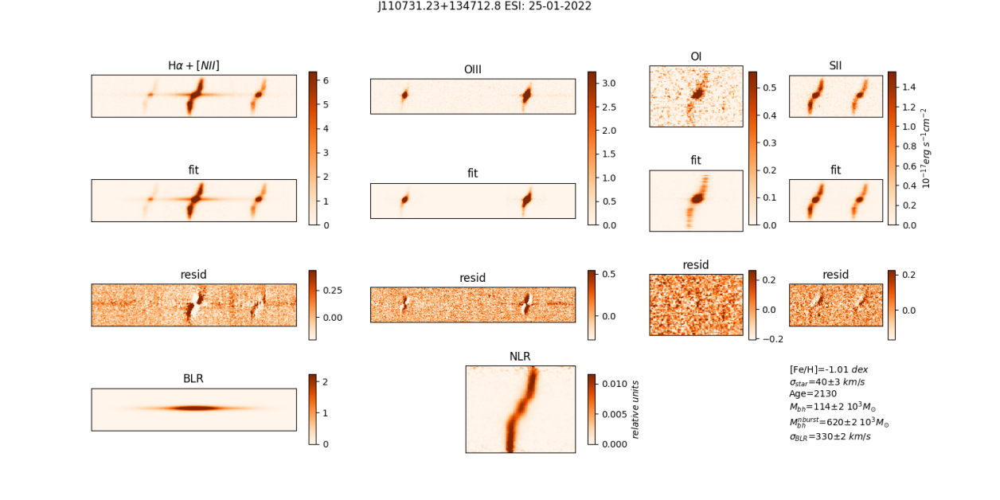
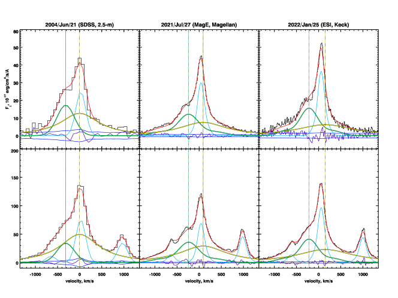
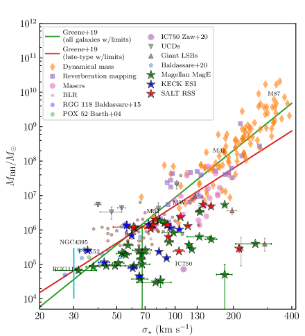

22institutetext: Center for Astrophysics – Harvard and Smithsonian (USA),
33institutetext: Department of Physics, M.V. Lomonosov Moscow State University,
44institutetext: Max-Planck-Institut für Astronomie, Königstuhl 17, 69117 Heidelberg, Germany
55institutetext: New York University Abu Dhabi (UAE),
66institutetext: Center for Astro, Particle, and Planetary Physics, NYU AD (UAE)
77institutetext: Université Paris Cité, CNRS(IN2P3), Astroparticule et Cosmologie, F-75013 Paris, France,
88institutetext: European Southern Observatory, Karl-Schwarzschildstr. 2, 85748, Garching bei München, Germany
التحليل الطيفي البصري للمجرات المضيفة للثقوب السوداء المتوسطة الكتلة: تطور الثقوب السوداء المركزية
الملخص
تُعد الثقوب السوداء المتوسطة الكتلة (IMBHs) ذات الكتل الأدنى من () محورية لفهم منشأ وآليات نمو الثقوب السوداء فائقة الكتلة (SMBHs) في أنوية المجرات. تركز هذه الدراسة على البحث عن الثقوب السوداء المركزية خفيفة الكتلة في مجرات متنوعة وتحليلها تفصيليا. وقد اختيرت عينة موسعة من مرشحي الثقوب السوداء المتوسطة الكتلة من كتالوج RCSED الطيفي البصري، ثم أُتبعت بأرصاد طيفية محسنة باستخدام تلسكوبات كبيرة، منها تلسكوبات Magellan و SALT و Keck و CMO. ومن خلال تحليل ما يزيد على 70 طيف، حصلنا على كتل فيريالية دقيقة، ومعلمات للجماعات النجمية، وحركياتها. ومن النتائج المهمة رصد نظام ثنائي من الثقوب السوداء بكتلتين ( و ). وتشير نتائجنا إلى أن الثقوب السوداء المتوسطة الكتلة ونظائرها من الثقوب السوداء فائقة الكتلة منخفضة الكتلة لا تتطور بالضرورة تطورا مشتركا مع مجراتها المضيفة، مما يرجح أن التراكم فوق حد إدنغتون آلية نمو مهيمنة. ويعزز هذا البحث دقة تقديرات الكتل الفيريالية، ويقدم رؤى جديدة في علاقة ، بما قد يؤثر في الأرصاد المستقبلية للثقوب السوداء فائقة الكتلة عند الانزياحات الحمراء العالية باستخدام منشآت الجيل القادم.
keywords:
علم الكونيات: أرصاد — الكون المبكر — المجرات: نشطة — المجرات: أنوية — المجرات: سايفرت — الكوازارات: ثقوب سوداء فائقة الكتلة1 مقدمة
اكتُشف بالفعل نحو مئة مما يسمى الثقوب السوداء المتوسطة الكتلة (IMBH, ). وخلال العقود المقبلة، ستكشف Laser Interferometer Space Antenna (LISA) (2023LRR....26....2A) و Multi-AO Imaging Camera for Deep Observations (MICADO) (2016SPIE.9908E..1ZD; 2024arXiv240406558D) في Extremely Large Telescope (ELT) عن مزيد من هذه الثقوب السوداء. ولا يُعرف في الوقت الحاضر على وجه الدقة منشؤها ولا آليات تطورها. إن فهم منشأ الثقوب السوداء المتوسطة الكتلة وتطورها مهم للغاية في الفيزياء الفلكية الحديثة، لأنه سيقدم مفتاحا لفهم مسألة أكثر شمولية، هي لغز منشأ الثقوب السوداء فائقة الكتلة (SMBHs) وآليات نموها في أنوية المجرات. ويُكرس هذا العمل للبحث عن الثقوب السوداء المركزية خفيفة الكتلة في مجرات من أنواع مختلفة ودراستها.
إن اكتشاف الكوازارات في الكون المبكر (z ، أي بعد 750-900 Myr فقط من بدء تمدد الكون) التي تحتوي على ثقوب سوداء فائقة الكتلة بكتل من رتبة (mortlock11) لا يمكن تفسيره بمجرد تراكم الغاز على ثقوب سوداء ذات كتل نجمية. وحتى لو كانت الثقوب السوداء قد تكونت مباشرة بعد بدء تمدد الكون، من خلال انهيار أنوية نجوم الجيل الثالث، لاحتاج نمو الثقب الأسود فائق الكتلة إلى أكثر من 1 مليار سنة، ما لم يتجاوز معدل التراكم حد إدنغتون بدرجة كبيرة ولمدة طويلة.
وفي الوقت نفسه، فإن الثقوب السوداء المتوسطة الكتلة أضخم من أن تتكون بانهيار جاذبي لنجم منفرد، لكنها أخف من أن تُعد فائقة الكتلة. ومع ذلك، توجد حاليا فرضيات عن تكوّن الثقوب السوداء المتوسطة الكتلة نتيجة انهيار نجوم الجيل الثالث فائقة الكتلة (StarsPopIII).
يُعتقد أن الثقوب السوداء فائقة الكتلة تتطور تطورا مشتركا مع الأجزاء الكروية في مجراتها المضيفة (ويشار إليها فيما بعد بالمجرات المضيفة) (kormendy13). ومن ثم، توجد ما يسمى «علاقة التحجيم» بين كتلة الثقب الأسود وتشتت السرعات في المجرة المضيفة.
في السنوات الأخيرة، وسعنا العينة المعروفة من مرشحي الثقوب السوداء المتوسطة الكتلة ومن الثقوب السوداء المتوسطة الكتلة المؤكدة أضعافا عدة (IMBH; 2023AAS...24230903C; VAK21_VG; VAK21_VT؛ وعن طريق التغيرية البصرية VAK21_MD; 2024ASPC..535..283D). وأساس عينة المجرات لدينا هو كتالوج RCSED الطيفي البصري للمجرات (RCSED)، الذي حللنا فيه بدورنا أطياف SDSS (SDSS_DR7). وليست دقة أطياف SDSS (R 2000) ملائمة للحصول على كتل فيريالية دقيقة، لكنها تتيح لنا إجراء اختيار أولي للمجرات التي تضم ثقوبا سوداء منخفضة الكتلة في مراكزها. وبعد اختيار مرشحي الثقوب السوداء المتوسطة الكتلة وما يسمى الثقوب السوداء فائقة الكتلة «خفيفة الوزن» (LWSMBH, )، تابعنا رصدها طيفيا في النطاق البصري على تلسكوبات كبيرة (تلسكوب Magellan بقطر 6.5-m، و Southern African Large Telescope بقطر 10-m، وتلسكوب Keck بقطر 10-m، وتلسكوب Caucasus Mountain Observatory بقطر 2.5-m).

2 أرصاد المتابعة وتحليلها
أصبحت أطياف أكثر من 70 مجرة متاحة الآن من أدوات MagE (Magellan، إيكلية) و ESI (Keck، إيكلية) و RSS (SALT، ذات شق طويل) و TDS (CMO، ذات شق طويل). أولا، أُنجز اختزال معياري لأرصادنا بواسطة خط المعالجة الذي كتبناه. وأُجريت معايرة التدفق للأطياف بغرض الحصول على كتل فيريالية دقيقة للثقوب السوداء. وتمثل التحليل الأولي للأطياف في إيجاد معلمات الجماعة النجمية (المعدنية، والعمر، والحركيات) باستخدام طريقتنا NBURSTs (NBURSTs).
بعد ذلك، يُطرح المتصل النجمي من الأطياف الأصلية ولا يُحلل إلا طيف الإصدار. ويُجرى تفكيك لامعلمي لشكل خط إلى مكوّني BLR و NLR. وتقرّب طريقة إعادة بناء شكل NLR في آن واحد جميع خطوط الإصدار القوية: باستعمال تركيب خطي من مكوّن خط ضيق ذي شكل لامعلمي ومكوّن غاوسي عريض في خطوط بالمر. وتُلائم معلمات BLR، وهي تشتت السرعات ()، والسرعة الشعاعية لمركز مكوّن BLR، والمعلمتان h3 و h4، ضمن حلقة تصغير لاخطية. كما تُلائم في هذه الحلقة معلمات psf ومركز BLR على الشق، نظرا إلى أننا نتعامل مع حالة ثنائية الأبعاد. ثم يُستخدم تدفق خط العريض وعرضه في تقدير فيريالي باستخدام المعايرة من reines13: . وقد صُححت الكتل المحسوبة لخسائر الضوء في الشق.


3 تطور الثقوب السوداء المركزية
نتيجة لتحليل أحد الأطياف التي حصلنا عليها في MagE، رُصد ثقب أسود ثنائي في إحدى المجرات استنادا إلى وجود مكوّن عريض مزدوج في سلسلة خطوط بالمر. وتبلغ كتلتا الثقبين الأسودين على الترتيب و . ويفصل بين مكوّني BLR مقدار 150 km/s. وبعد اكتشاف هذا الجسم باستخدام MagE، أجرينا أرصادا لهذه المجرة بتلسكوبات أخرى، هي Keck و CMO. ويخضع هذا الجسم حاليا لدراسة متعددة الأطوال الموجية.
ونتيجة لتحليلنا، نُقحت كتل أكثر من 70 مرشحا من مرشحي الثقوب السوداء المتوسطة الكتلة. وقد حُللت الأطياف البصرية (ذات الدقة الطيفية الجيدة) لأكبر عينة حالية من الثقوب السوداء المتوسطة الكتلة والثقوب السوداء فائقة الكتلة خفيفة الوزن: إذ استُخرجت معلمات الجماعات النجمية، وحركيات النجوم والغاز، وقِيست الكتل الفيريالية للثقوب السوداء المركزية. وتتمتع قيم الكتل الفيريالية للثقوب السوداء بدقة أعلى مقارنة بتلك المحددة من أطياف SDSS. وبفضل الدقة الطيفية الأعلى، أمكن فصل تدفق النواة المجرية النشطة إلى الخارج عن مكوّن BLR في خطوط بالمر.
اعتمادا على تشتتات السرعات التي حُصل عليها في الانتفاخ المجرّي والكتل الفيريالية للثقوب السوداء، بُني الاعتماد . ومن النتائج التي حصلنا عليها للثقوب السوداء منخفضة الكتلة، استنادا إلى علاقة ، يمكننا أن نستنتج أن الثقوب السوداء المتوسطة الكتلة في الكون القريب لا يبدو أنها تتطور مع مجراتها المضيفة: فهي تنمو بالتراكم، بينما تنمو مجراتها المضيفة نموا علمانيا (على الرغم من أن مصادر الغاز قد تكون مترابطة). وتظل علاقات التحجيم محفوظة، لكن اعتماد كتلة الثقب الأسود على تشتت السرعات مختلف. وإذا حدث الأمر نفسه عند الانزياحات الحمراء العالية، فإن التراكم عند حد إدنغتون أو فوقه هو الآلية المهيمنة لنمو الثقوب السوداء فائقة الكتلة عند الكتل المنخفضة، ونتوقع رؤية ثقوب سوداء فائقة الكتلة ذات z كبير في الأشعة السينية باستخدام منشآت الجيل القادم Athena أو Lynx. ومع ذلك، فثمة تفسير آخر محتمل لموضع الثقوب السوداء المتوسطة الكتلة على علاقة : قد لا تكون علاقة التحجيم لدى reines13 لتقدير كتلة الثقب الأسود صالحة للكتل الصغيرة للثقوب السوداء. ولاختبار موثوقية علاقات ، بدأنا حملة صدى BLR باستخدام مرشحات H الضيقة (Demianenko et al. قيد الإعداد) في CMO التابع لمعهد Sternberg Astronomical Institute في Moscow State University (SAI MSU).
شكر وتقدير. يحظى هذا المشروع بدعم من منحة Basis Foundation رقم 23-2-2-50-1.